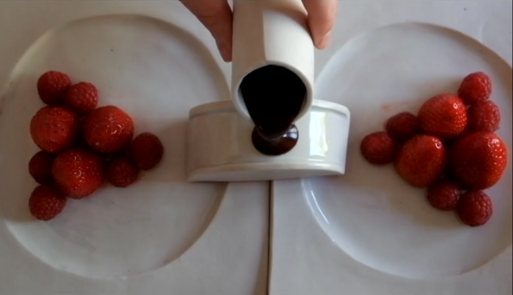
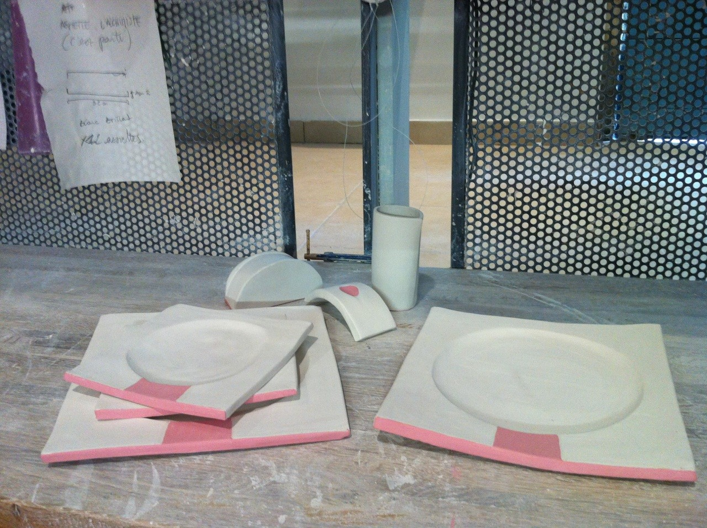
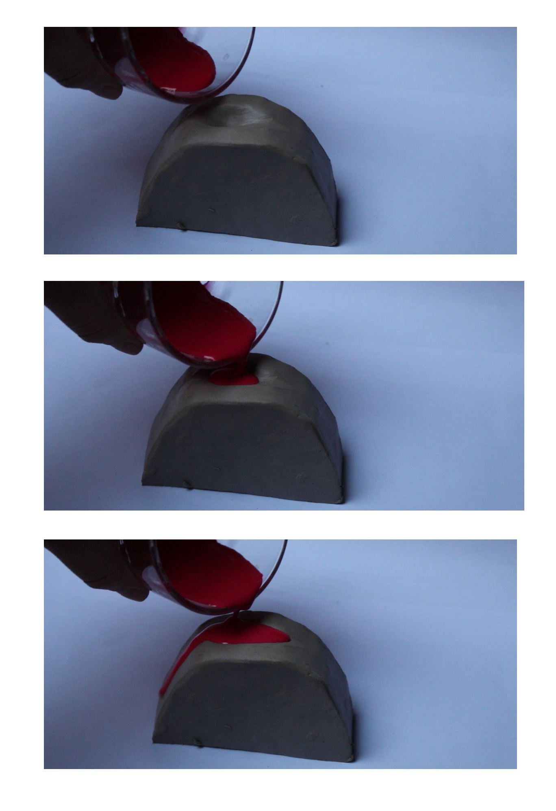
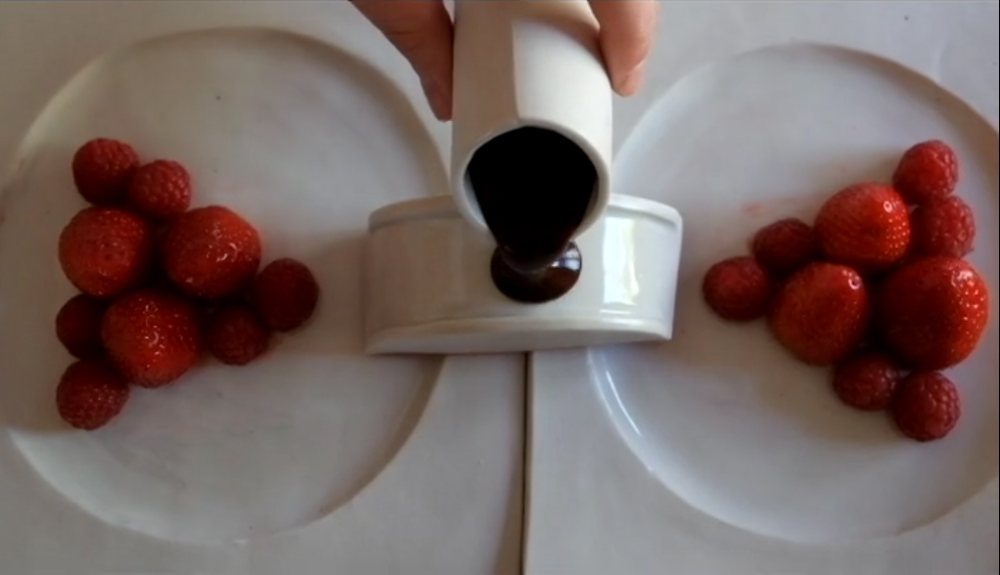
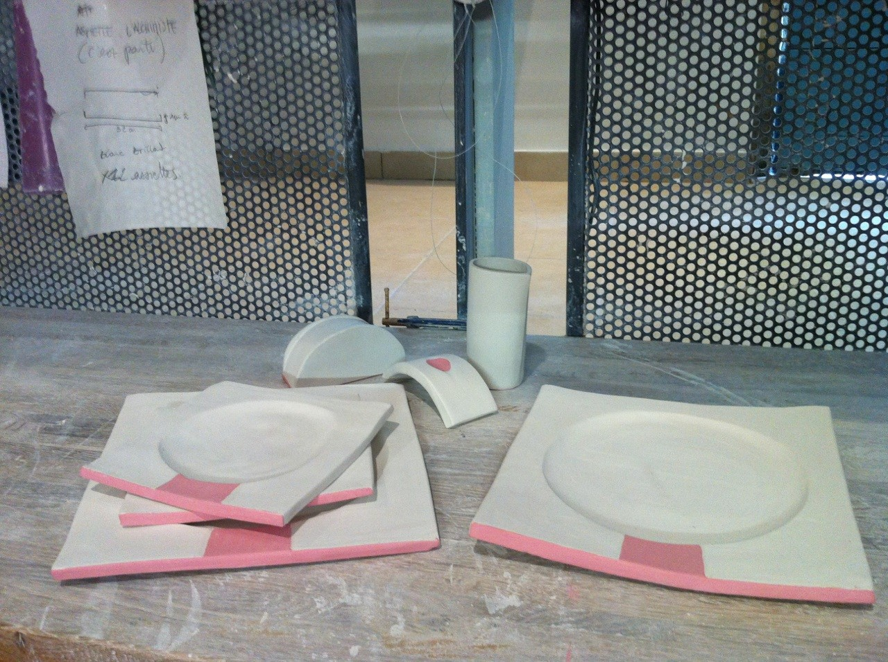
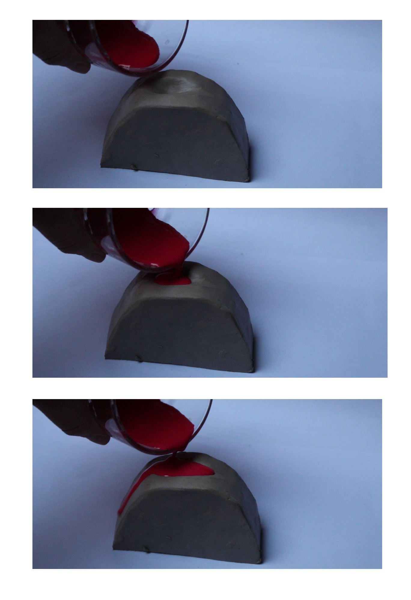

osez partager
Le repas à deux, le repas amoureux est particulier en bien des aspects. Il est spécial de par les enjeux qu’il soulève : les prémices d’une relation, un rapprochement, un éloignement, il n’est souvent pas anodin. Il met aussi en évidence des comportements et interactions propres à lui : les couples aiment partager; de leurs émotions au contenu de leurs assiettes, ils tendent vers une fusion. L’enjeu est, ici, de rendre la vaisselle actrice de ces interactions amoureuses.
Osez partager est un ensemble vaisselier qui induit le rapprochement des assiettes, puis la répartition de la sauce entre les deux assiettes, témoignant du lien amoureux voire érotique.
projet professionnel BTS, 2016

 




